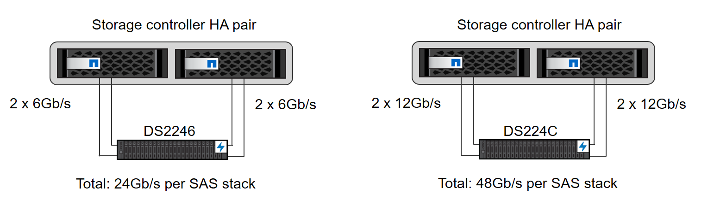
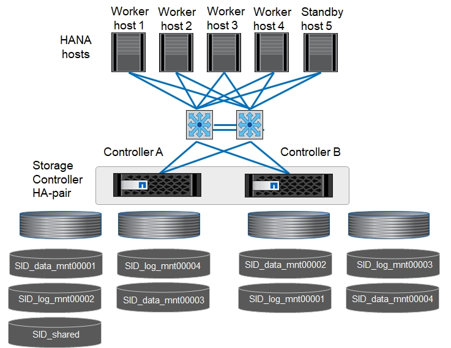

Storage controller setup
Contributors
This section describes the configuration of the NetApp storage system. You must complete the primary installation and setup according to the corresponding ONTAP setup and configuration guides.
Storage efficiency
Inline deduplication, cross- volume inline deduplication, inline compression, and inline compaction are supported with SAP HANA in an SSD configuration.
Enabling storage efficiency features in an HDD-based configuration is not supported.
NetApp volume encryption
The use of NetApp Volume Encryption (NVE) is supported with SAP HANA.
Quality of service
QoS can be used to limit the storage throughput for specific SAP HANA systems or other applications on a shared-use controller. One use case would be to limit the throughput of development and test systems so that they cannot influence production systems in a mixed setup.
During the sizing process, you should determine the performance requirements of a nonproduction system. Development and test systems can be sized with lower performance values, typically in the range of 20% to 50% of a production-system KPI as defined by SAP.
Starting with ONTAP 9, QoS is configured on the storage volume level and uses maximum values for throughput (MBps) and the amount of I/O (IOPS).
Large write I/O has the biggest performance effect on the storage system. Therefore, the QoS throughput limit should be set to a percentage of the corresponding write SAP HANA storage performance KPI values in the data and log volumes.
NetApp FabricPool
NetApp FabricPool technology must not be used for active primary file systems in SAP HANA systems. This includes the file systems for the data and log area as well as the /hana/shared file system. Doing so results in unpredictable performance, especially during the startup of an SAP HANA system.
Using the “snapshot-only” tiering policy is possible as well as using FabricPool in general at a backup target such as a SnapVault or SnapMirror destination.

|
Using FabricPool for tiering Snapshot copies at primary storage or using FabricPool at a backup target changes the required time for the restore and recovery of a database or other tasks such as creating system clones or repair systems. Take this into consideration for planning your overall lifecycle- management strategy and check to make sure that your SLAs are still being met while using this function. |
FabricPool is a good option for moving log backups to another storage tier. Moving backups affects the time needed to recover an SAP HANA database. Therefore, the option “tiering-minimum-cooling-days” should be set to a value that places log backups, which are routinely needed for recovery, on the local fast storage tier.
Storage configuration
The following overview summarizes the required storage configuration steps. Each step is covered in detail in the subsequent sections. In this section, we assume that the storage hardware is set up and that the ONTAP software is already installed. Also, the connections between the storage ports (10GbE or faster) and the network must already be in place.
-
Check the correct SAS stack configuration as described in Disk shelf connection.
-
Create and configure the required aggregates as described in Aggregate configuration.
-
Create a storage virtual machine (SVM) as described in Storage virtual machine configuration.
-
Create LIFs as described in Logical interface configuration.
-
Create volumes within the aggregates as described in Volume configuration for SAP HANA single-host systems and Volume configuration for SAP HANA multiple-host systems.
-
Set the required volume options as described in Volume options.
-
Set the required options for NFSv3 as described in NFS configuration for NFSv3 or for NFSv4 as described in NFS configuration for NFSv4.
-
Mount the volumes to namespace and set export policies as described in Mount volumes to namespace and set export policies.
Disk shelf connection
With HDDs, a maximum of two DS2246 disk shelves or four DS224C disk shelves can be connected to one SAS stack to provide the required performance for the SAP HANA hosts, as shown in the following figure. The disks within each shelf must be distributed equally to both controllers of the HA pair.

With SSDs, a maximum of one disk shelf can be connected to one SAS stack to provide the required performance for the SAP HANA hosts, as shown in the following figure. The disks within each shelf must be distributed equally to both controllers of the HA pair. With the DS224C disk shelf, quad- path SAS cabling can also be used, but is not required.

Aggregate configuration
In general, you must configure two aggregates per controller, independent of the disk shelf or drive technology (SSD or HDD) that is used. For FAS2000 series systems, one data aggregate is enough.
Aggregate configuration with HDDs
The following figure shows a configuration for eight SAP HANA hosts. Four SAP HANA hosts are attached to each storage controller. Two separate aggregates, one at each storage controller, are configured. Each aggregate is configured with 4 × 10 = 40 data disks (HDDs).

Aggregate configuration with SDD-only systems
In general, you must configure two aggregates per controller, independent of which disk shelf or disk technology (SSDs or HDDs) is used. For FAS2000 series systems, one data aggregate is enough.
The following figure shows a configuration of 12 SAP HANA hosts running on a 12Gb SAS shelf configured with ADPv2. Six SAP HANA hosts are attached to each storage controller. Four separate aggregates, two at each storage controller, are configured. Each aggregate is configured with 11 disks with nine data and two parity disk partitions. For each controller, two spare partitions are available.

Storage virtual machine configuration
Multiple SAP landscapes with SAP HANA databases can use a single SVM. An SVM can also be assigned to each SAP landscape, if necessary, in case they are managed by different teams within a company.
If a QoS profile was automatically created and assigned during new SVM creation, remove the automatically created profile from the SVM to provide the required performance for SAP HANA:
vserver modify -vserver <svm-name> -qos-policy-group none
Logical interface configuration
For SAP HANA production systems, you must use different LIFs for mounting the data volume and the log volume from the SAP HANA host. Therefore at least two LIFs are required.
The data and log volume mounts of different SAP HANA hosts can share a physical storage network port by using either the same LIFs or by using individual LIFs for each mount.
The maximum number of data and log volume mounts per physical interface are shown in the following table.
| Ethernet port speed | 10GbE | 25GbE | 40GbE | 100GeE |
|---|---|---|---|---|
Maximum number of log or data volume mounts per physical port |
2 |
6 |
12 |
24 |
|
|
Sharing one LIF between different SAP HANA hosts might require a remount of data or log volumes to a different LIF. This change avoids performance penalties if a volume is moved to a different storage controller. |
Development and test systems can use more data and volume mounts or LIFs on a physical network interface.
For production, development, and test systems, the /hana/shared file system can use the same LIF as the data or log volume.
Volume configuration for SAP HANA single-host systems
The following figure shows the volume configuration of four single-host SAP HANA systems. The data and log volumes of each SAP HANA system are distributed to different storage controllers. For example, volume SID1_data_mnt00001 is configured on controller A, and volume SID1_log_mnt00001 is configured on controller B.
|
|
If only one storage controller of an HA pair is used for the SAP HANA systems, data and log volumes can also be stored on the same storage controller. |
|
|
If the data and log volumes are stored on the same controller, access from the server to the storage must be performed with two different LIFs: one LIF to access the data volume and one to access the log volume. |

For each SAP HANA DB host, a data volume, a log volume, and a volume for /hana/shared are configured. The following table shows an example configuration for single-host SAP HANA systems.
| Purpose | Aggregate 1 at Controller A | Aggregate 2 at Controller A | Aggregate 1 at Controller B | Aggregate 2 at Controller b |
|---|---|---|---|---|
Data, log, and shared volumes for system SID1 |
Data volume: SID1_data_mnt00001 |
Shared volume: SID1_shared |
– |
Log volume: SID1_log_mnt00001 |
Data, log, and shared volumes for system SID2 |
– |
Log volume: SID2_log_mnt00001 |
Data volume: SID2_data_mnt00001 |
Shared volume: SID2_shared |
Data, log, and shared volumes for system SID3 |
Shared volume: SID3_shared |
Data volume: SID3_data_mnt00001 |
Log volume: SID3_log_mnt00001 |
– |
Data, log, and shared volumes for system SID4 |
Log volume: SID4_log_mnt00001 |
– |
Shared volume: SID4_shared |
Data volume: SID4_data_mnt00001 |
The following table shows an example of the mount point configuration for a single-host system. To place the home directory of the sidadm user on the central storage, the /usr/sap/SID file system should be mounted from the SID_shared volume.
| Junction Path | Directory | Mount point at HANA host |
|---|---|---|
SID_data_mnt00001 |
– |
/hana/data/SID/mnt00001 |
SID_log_mnt00001 |
– |
/hana/log/SID/mnt00001 |
SID_shared |
usr-sap |
/usr/sap/SID |
Volume configuration for SAP HANA multiple-host systems
The following figure shows the volume configuration of a 4+1 SAP HANA system. The data and log volumes of each SAP HANA host are distributed to different storage controllers. For example, volume SID1_data1_mnt00001 is configured on controller A, and volume SID1_log1_mnt00001 is configured on controller B.
|
|
If only one storage controller of an HA pair is used for the SAP HANA system, the data and log volumes can also be stored on the same storage controller. |
|
|
If the data and log volumes are stored on the same controller, access from the server to the storage must be performed with two different LIFs: one to access the data volume and one to access the log volume. |

For each SAP HANA host, a data volume and a log volume are created. The /hana/shared volume is used by all hosts of the SAP HANA system. The following table shows an example configuration for a multiple-host SAP HANA system with four active hosts.
| Purpose | Aggregate 1 at Controller A | Aggregate 2 at Controller A | Aggregate 1 at Controller B | Aggregate 2 at Controller B |
|---|---|---|---|---|
Data and log volumes for node 1 |
Data volume: SID_data_mnt00001 |
– |
Log volume: SID_log_mnt00001 |
– |
Data and log volumes for node 2 |
Log volume: SID_log_mnt00002 |
– |
Data volume: SID_data_mnt00002 |
– |
Data and log volumes for node 3 |
– |
Data volume: SID_data_mnt00003 |
– |
Log volume: SID_log_mnt00003 |
Data and log volumes for node 4 |
– |
Log volume: SID_log_mnt00004 |
– |
Data volume: SID_data_mnt00004 |
Shared volume for all hosts |
Shared volume: SID_shared |
– |
– |
– |
The following table shows the configuration and the mount points of a multiple-host system with four active SAP HANA hosts. To place the home directories of the sidadm user of each host on the central storage, the /usr/sap/SID file systems are mounted from the SID_shared volume.
| Junction path | Directory | Mount point at SAP HANA host | Note |
|---|---|---|---|
SID_data_mnt00001 |
– |
/hana/data/SID/mnt00001 |
Mounted at all hosts |
SID_log_mnt00001 |
– |
/hana/log/SID/mnt00001 |
Mounted at all hosts |
SID_data_mnt00002 |
– |
/hana/data/SID/mnt00002 |
Mounted at all hosts |
SID_log_mnt00002 |
– |
/hana/log/SID/mnt00002 |
Mounted at all hosts |
SID_data_mnt00003 |
– |
/hana/data/SID/mnt00003 |
Mounted at all hosts |
SID_log_mnt00003 |
– |
/hana/log/SID/mnt00003 |
Mounted at all hosts |
SID_data_mnt00004 |
– |
/hana/data/SID/mnt00004 |
Mounted at all hosts |
SID_log_mnt00004 |
– |
/hana/log/SID/mnt00004 |
Mounted at all hosts |
SID_shared |
shared |
/hana/shared/ |
Mounted at all hosts |
SID_shared |
usr-sap-host1 |
/usr/sap/SID |
Mounted at host 1 |
SID_shared |
usr-sap-host2 |
/usr/sap/SID |
Mounted at host 2 |
SID_shared |
usr-sap-host3 |
/usr/sap/SID |
Mounted at host 3 |
SID_shared |
usr-sap-host4 |
/usr/sap/SID |
Mounted at host 4 |
SID_shared |
usr-sap-host5 |
/usr/sap/SID |
Mounted at host 5 |
Volume options
You must verify and set the volume options listed in the following table on all SVMs. For some of the commands, you must switch to the advanced privilege mode within ONTAP.
| Action | Command |
|---|---|
Disable visibility of Snapshot directory |
vol modify -vserver <vserver-name> -volume <volname> -snapdir-access false |
Disable automatic Snapshot copies |
vol modify –vserver <vserver-name> -volume <volname> -snapshot-policy none |
Disable access time update except of the SID_shared volume |
set advanced |
NFS configuration for NFSv3
The NFS options listed in the following table must be verified and set on all storage controllers.
For some of the commands shown, you must switch to the advanced privilege mode within ONTAP.
| Action | Command |
|---|---|
Enable NFSv3 |
nfs modify -vserver <vserver-name> v3.0 enabled |
ONTAP 9: |
set advanced |
ONTAP 8: |
set advanced |
NFS configuration for NFSv4
The NFS options listed in the following table must be verified and set on all SVMs.
For some of the commands, you must switch to the advanced privilege mode within ONTAP.
| Action | Command |
|---|---|
Enable NFSv4 |
nfs modify -vserver <vserver-name> -v4.1 |
ONTAP 9: |
set advanced |
ONTAP 8: |
set advanced |
Disable NFSv4 access control lists (ACLs) |
nfs modify -vserver <vserver_name> -v4.1-acl disabled |
Set NFSv4 domain ID |
nfs modify -vserver <vserver_name> -v4-id-domain <domain-name> |
Disable NFSv4 read delegation |
nfs modify -vserver <vserver_name> -v4.1-read-delegation disabled |
Disable NFSv4 write delegation |
nfs modify -vserver <vserver_name> -v4.1-write-delegation disabled |
Set the NFSv4 lease time |
set advanced |
Disable NFSv4 numeric ids |
nfs modify -vserver <vserver_name> -v4-numeric-ids disabled |
|
|
The NFSv4 domain ID must be set to the same value on all Linux servers (/etc/idmapd.conf) and SVMs, as described in SAP HANA installation preparations for NFSv4.
|
|
|
If you are using NFSV4.1, then pNFS can be enabled and used. |
Set the NFSv4 lease time at the SVM as shown in the following table if SAP HANA multiple- host systems are used.
| Action | Command |
|---|---|
Set the NFSv4 lease time. |
set advanced |
Starting with HANA 2.0 SPS4, HANA provides parameters to control failover behavior. Instead of setting the lease time at the SVM level, NetApp recommends using these HANA parameters. The parameters are within nameserver.ini as shown in the following table. Keep the default retry interval of 10 seconds within these sections.
| Section within nameserver.ini | Parameter | Value |
|---|---|---|
failover |
normal_retries |
9 |
distributed_watchdog |
deactivation_retries |
11 |
distributed_watchdog |
takeover_retries |
9 |
Mount volumes to namespace and set export policies
When a volume is created, the volume must be mounted to the namespace. In this document, we assume that the junction path name is the same as the volume name. By default, the volume is exported with the default policy. The export policy can be adapted if required.
 Request doc changes
Request doc changes Edit this page
Edit this page Learn how to contribute
Learn how to contribute